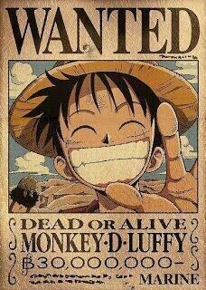
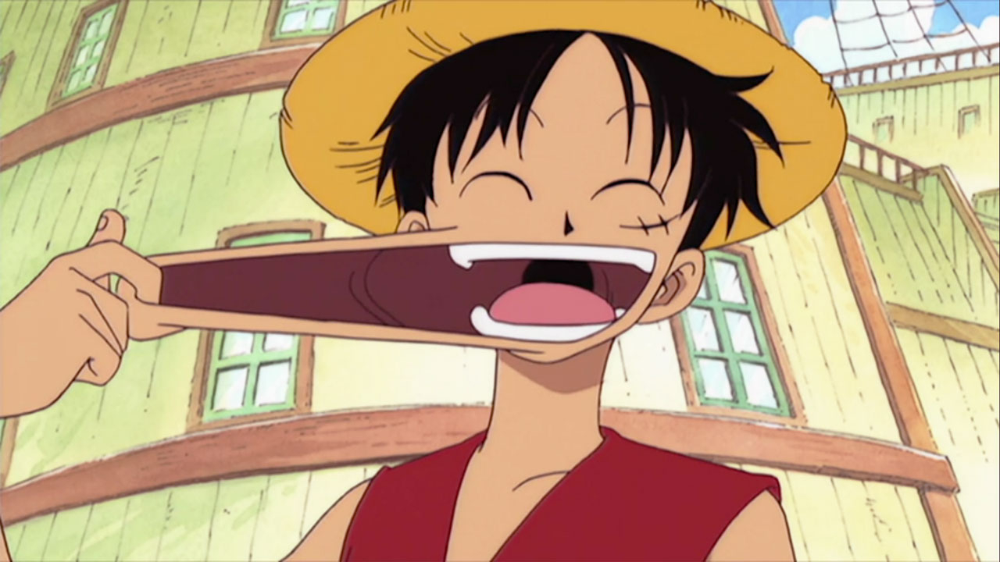
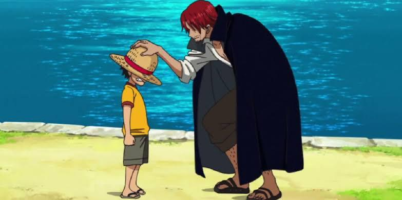
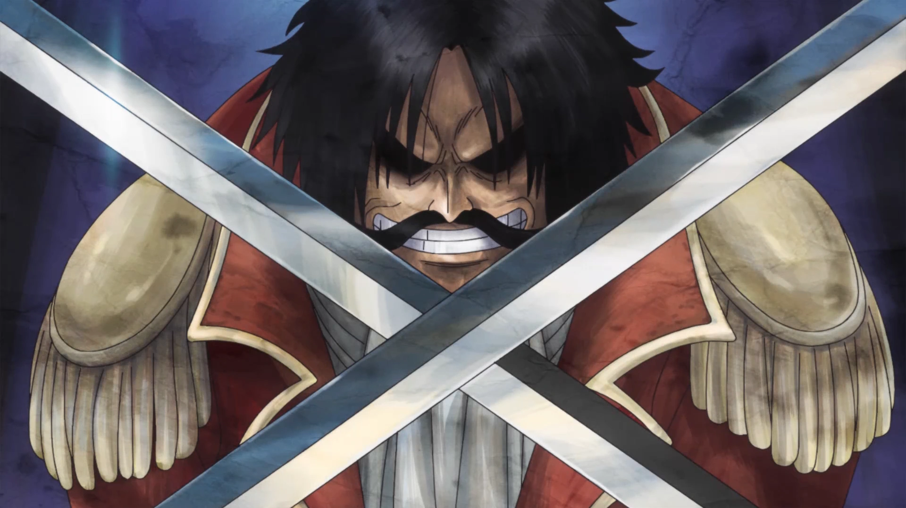
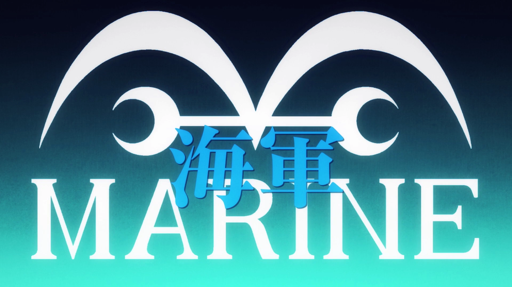
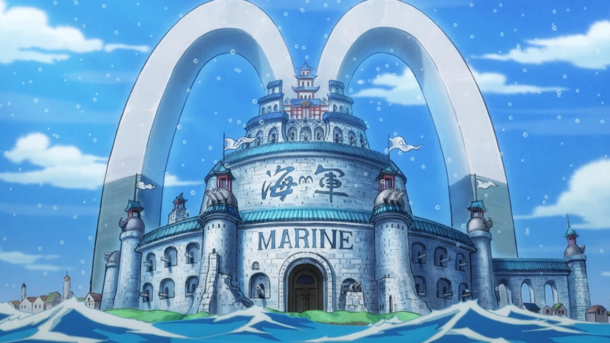
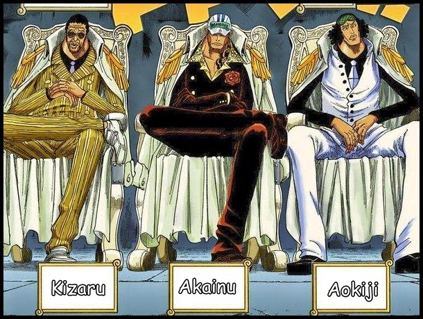

Luffy


Conheça o personagem principal do Anime One Piece
Aquele que se tornará o Rei dos Piratas!
Monkey D. Luffy é o protagonista de One Piece, capitão dos Chapéus de Palha e o homem que deseja se tornar o Rei dos Piratas.
Ele ganhou a habilidade de esticar seu corpo como se fosse borracha após comer uma fruta mística chamada Gomu no Mi, que o tornou um "homem de borracha". Luffy é conhecido por sua personalidade alegre, determinação inabalável e forte senso de justiça.




O mundo de One Piece é repleto de ilhas, mares e aventuras.
Tudo começou com a execução do Lendário pirata Gol D. Roger, que revelou a existência do tesouro mais valioso do mundo, o One Piece
Isso desencadeou a Grande Era dos Piratas, onde inúmeros piratas partiram pelos mares em busca do tesouro e da fama.
A Marinha é a principal força militar do Governo Mundial.
Seu objetivo é manter a ordem dos mares e capturar piratas perigosos.
Suas ações confrontam diretamente os piratas, para prezar pela segurança dos civis e a estabilidade do mundo.


